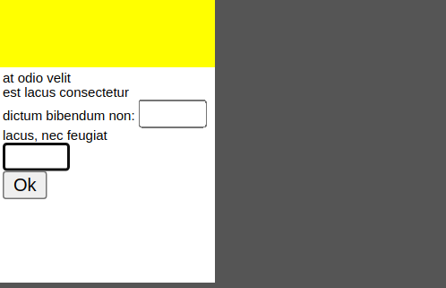
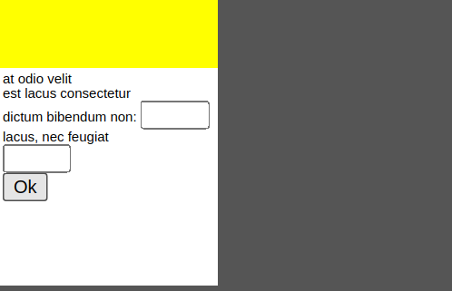

{
"event": "reset",
"goal": "Click on the \"Ok\" button.",
"screenshot": "0000.png",
"sha256": "20759c6d42a80494d49325d086617ec3eb75aab15ca2736b6b7310cbddbea5e9"
}
{
"event": "source_action",
"action": {
"action": "CLICK",
"value": null,
"position": [
0.06,
0.56
]
},
"reward": 0.0,
"terminated": false,
"truncated": false,
"screenshot": "0001.png",
"sha256": "12938a58713fab39baa50b687f531e376c12258bd399e3636a3d72e682d302ac"
}{
"event": "candidate_prediction",
"raw": "[0.059,0.61]",
"action": {
"action": "CLICK",
"value": null,
"position": [
0.059,
0.61
]
},
"input_query": "The \"Ok\" button\nPrevious proposed action: {\"action\":\"CLICK\",\"value\":null,\"position\":[0.06,0.56]}\nRecheck the current screenshot and return the target location."
}
{
"event": "candidate_action",
"action": {
"action": "CLICK",
"value": null,
"position": [
0.059,
0.61
]
},
"reward": 1.0,
"terminated": true,
"truncated": false,
"screenshot": "0002.png",
"sha256": "8776a5a429cc7946d4a85c84a07836c700a5f8ce3d7c6ab7513fc33b41b25d2d"
}{
"event": "episode_end",
"id": "click-button-6004-correction",
"task": "click-button",
"seed": 6004,
"head": "history_history",
"conditional": true,
"success": true,
"reason": "success",
"source_steps": 1,
"repair_steps": 1,
"resets_after_failure": 0,
"source_model_calls_reused": 1,
"candidate_model_calls_reused": 1,
"additional_submit_calls": 0,
"prefix_matched": true,
"total_logical_model_calls": 2,
"recovery_mode": "retry_in_place"
}